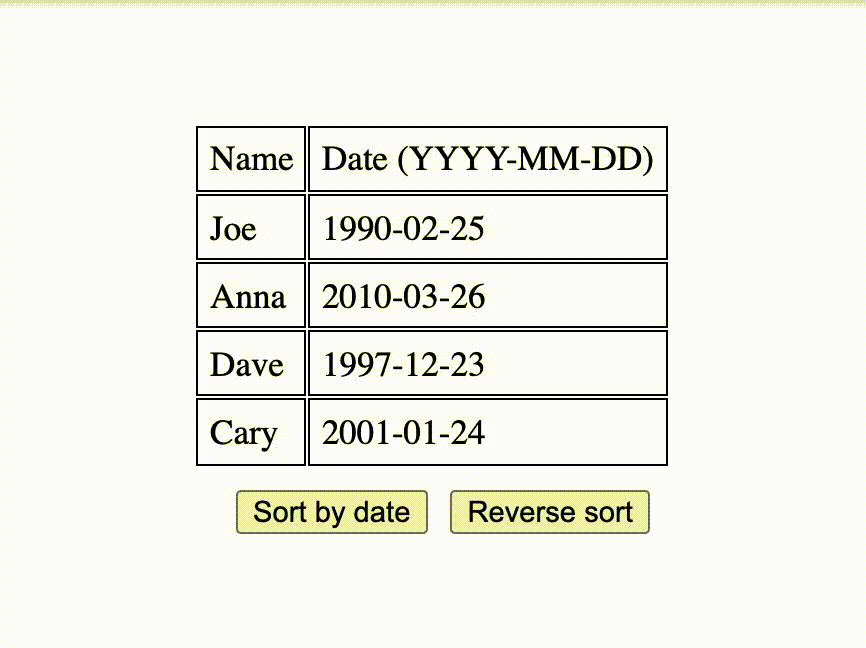
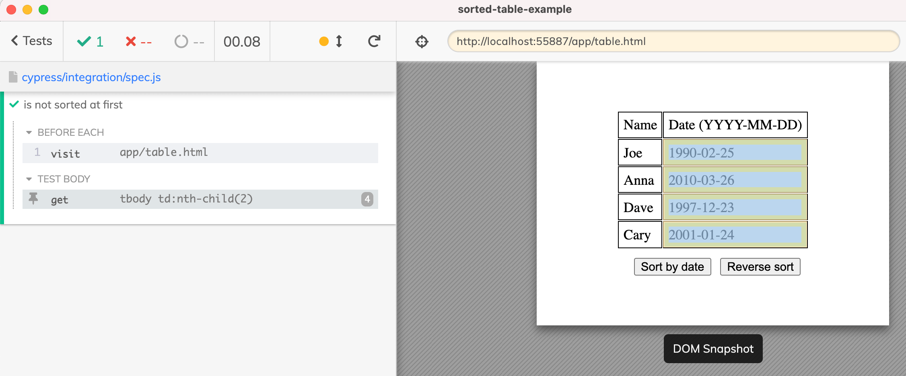
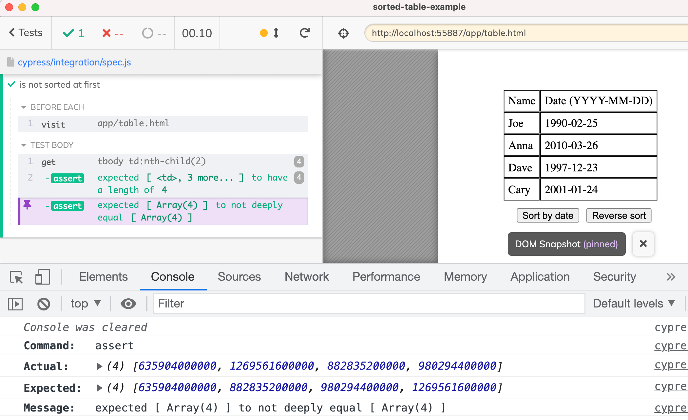
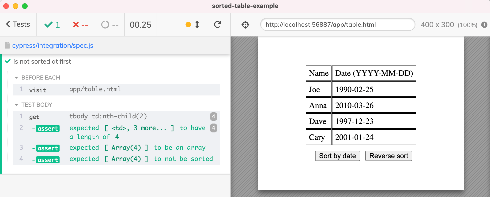
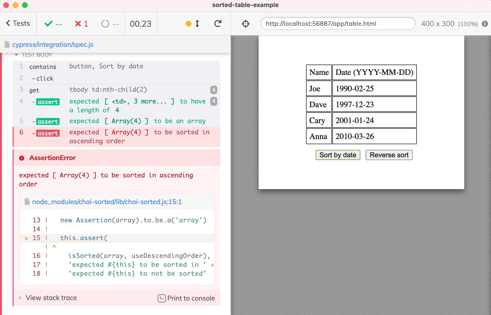
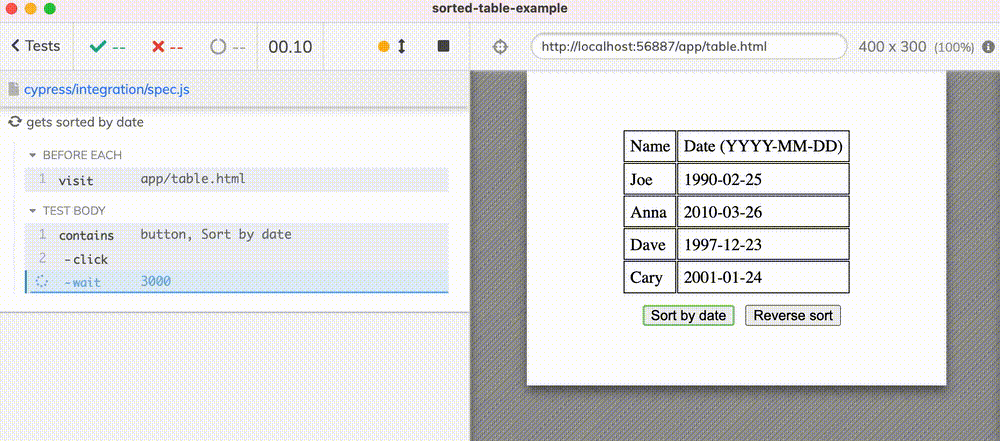
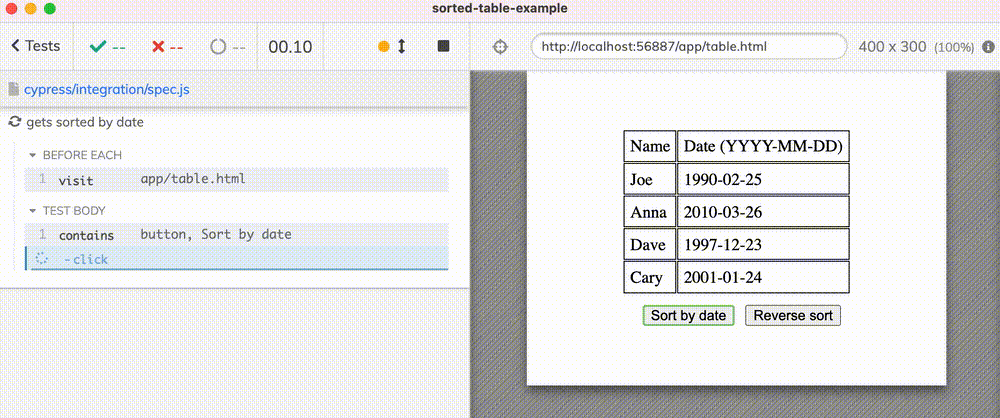
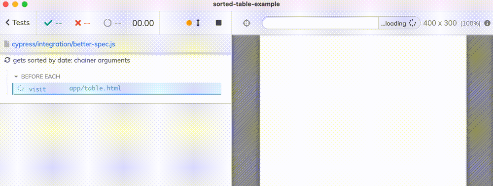
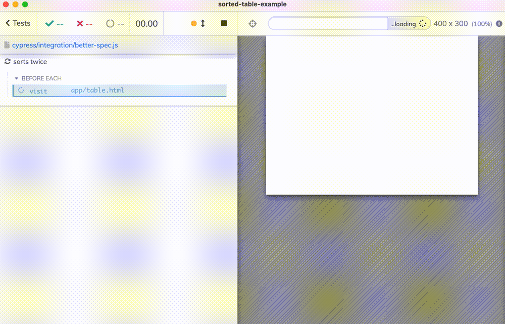
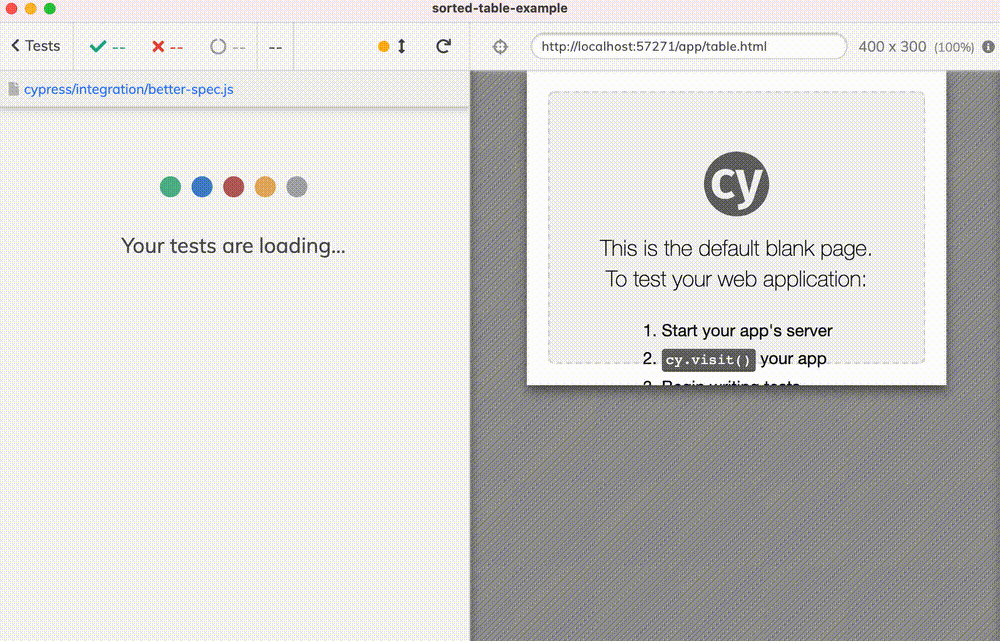

This blog post will teach you how to write short and expressive Cypress tests using a library of tiny functional utilities cypress-should-really. Using this library you will be able to also write single functional callbacks to take advantage of Cypress built-in command retry-ability.
- The sorted table
- The first test
- chai-sorted
- The problem
- Callback function as assertion
- Mapping and invoking
- Assertion function
- Reusing pipes
- Aside: a better solution
- See also
The sorted table
Imagine you have a table that can be sorted by a column. You can find such application (which is really just a static HTML file) at bahmutov/sorted-table-example. The table gets sorted when you click a button, but there is a slight delay between the click and the page update as the application is "crunching some numbers".

The first test
How would you confirm the table is really sorted using a Cypress test? First, let's confirm it is NOT sorted. Let's get all date cells using CSS nth-child selector.
1 | beforeEach(() => { |
We can confirm the test picks the right cells by hovering over the command in the Cypress Command Log.

We need to extract the text from each cell, convert the YYYY-MM-DD strings into Date objects, then to timestamps, then check if the timestamp numbers are not sorted. Each step can be done using a separate cy.then command.
1 | cy.get('tbody td:nth-child(2)') |
Ughh, ok. Does it work? Yes - it confirms the timestamps are not sorted on the initial page. Just in case, let's look at the last assertion in the DevTools console.

chai-sorted
I believe readable tests are better than unreadable tests. Thus I love using additional Chai plugins to make the assertions clearly express what the test is trying to confirm. Thus I will use chai-sorted plugin in this test.
1 | $ npm i -D chai-sorted |
I will change the last assertion to should('not.be.sorted')
1 | cy.get('tbody td:nth-child(2)') |

The problem
Let's click on the "Sort by date" button and check if the table gets sorted. We can copy the above commands into the new test.
1 | it('gets sorted by date', () => { |
Ughh, the test fails

Our test fails miserably - it does not even wait for the table to be sorted after the click. If we add a three second delay between the click and the check, the test passes.
1 | cy.contains('button', 'Sort by date').click().wait(3000) |

Of course, we do not want to use a hard-coded wait, we want the test to retry getting the DOM elements, convert them into timestamps, and check if the suddenly are sorted. Why isn't this happening?
Cypress only retries certain commands, like querying ones cy.get, cy.contains, cy.its. It does not retry the commands that generally have side-effects, like cy.click, cy.task, or cy.then. Cypress also retries only the current command with its assertions. It does not go "back" along the chain of commands, even if those commands are safe to retry normally. This is why the retry-ability guide suggests merging multiple cy.get commands into one, or mixing commands and assertions.
1 | // might be flaky, only the last command |
In our case, the assertion is at the end of the long of chain of cy.then commands, and the execution never tries to get the table cells again. If we want to retry querying the page using the cy.get('tbody td:nth-child(2)') command, we need to somehow add the should('be.ascending') assertion to the cy.get command. Hmm, how can we do this?
Callback function as assertion
By passing a callback function to the should(callback) assertion. Inside the callback function we can use code to transform the elements returned by the cy.get command before checking if they are sorted. Here is the test where I moved all individual steps into the should(callback).
1 | it('gets sorted by date', () => { |
The above code retries calling the cy.get command while the callback callback throws an error in the expect(timestamps).to.be.ascending line.

Nice - yet the test is less readable than before :( Luckily, we can rewrite the code in the callback function to be much clearer using a few helpers from cypress-should-really NPM module.
Mapping and invoking
If you look at the .and($cells) function, it does the same common things again and again: mapping a list of values into another list, constructing Date objects, and invoking methods on each object. Right now we are using Lodash library that is bundled with Cypress to map jQuery object, etc. While Lodash is good, other libraries do a much better job of allowing you to compose common data transformations. We could use Ramda but even that excellent library can have rough edges while working with a mixture of plain and jQuery objects. This is why I wrote cypress-should-really and plan to expand it in the future if I find I need some other little utility to make the tests simpler to write. Let's see it in action.
1 | $ npm i -D cypress-should-really |
First, let's rewrite our initial test using map helper.
1 | // BEFORE |
Utilities like map and invoke are optimized for point-free programming, they return a function that is waiting for the data to be yielded by the Cypress command; the data is typically a jQuery object yielded by cy.get command, or an Array yielded by the previous cy.then command. I hope the test is readable:
1 | .then(map('innerText')) // extract property "innerText" from each object |
But using individual steps inside cy.then is going to cause the problem, because they are not retried. We need to use the helpers inside the assertion callback function. Luckily cypress-should-really has a few trick to help with constructing the single assertion callback too!
Assertion function
Let's rewrite our retry-able assertion function using the helpers.
1 | it('gets sorted by date', () => { |
The test passes like before. Let's eliminate all temporary variables like strings, dates, and timestamps - after all, they are used once just to pass the result to the next line.
1 | cy.contains('button', 'Sort by date').click() |
Notice the interesting thing: inside the expect we have a function calling another function, that calls another function, with the argument $cells. Each function is pure, just takes the input and produces output value. Thus these 3 functions can be combined into an equivalent single function to be called with $cells argument. We have a little helper to do just that in cypress-should-really called pipe.
1 | import { invoke, map, toDate, pipe } from 'cypress-should-really' |
🎓 I have made a few presentations about the above functional way of writing JavaScript, find the slide decks at slides.com/bahmutov/decks/functional.
The function fn constructed above is sitting, waiting for data. Once the data is passed in, the fn($cells) is computed and passed to the assertion expect(...).to ... for evaluation.
1 | const fn = pipe(map('innerText'), map(toDate), invoke('getTime')) |
Piping the data through a series of functions to be fed to the assertion expect(...).to Chai chainer is so common, that cypress-should-really has a ... helper for this. If you want to transform the data and run it through a Chai assertion use really function. It construct a should(callback) for you:
1 | import { invoke, map, toDate, pipe, really } from 'cypress-should-really' |
If you have any arguments for the assertion, place it after the chainer string. The same test can be written as
1 | cy.contains('button', 'Sort by date').click() |

Reusing pipes
The application can sort the table in ascending and descending order. To avoid code duplication, just store the pipe(step1, step2, ...) function.
1 | // use functional utilities from this NPM library |

Aside: a better solution
In my opinion, the application should indicate somehow that it has received the user click and it is doing something with the table. For example, the application can disable the buttons and only enable them after the table has finished sorting.
1 | function disableButtons() { |
This would make the tests much simpler to write without accidental flake.
1 | // use functional utilities from this NPM library |
Notice the above test is using built-in retry via .should('not.be.disabled') which applies to the button yielded by the previous command. Once the button is enabled, we can simply check once if the table has been sorted already. We do not even need the .should(callback) and instead we apply our pipe transformation using .then(callback) that only is executed once.
1 | cy.contains('button', 'Sort by date').click().should('not.be.disabled') |
It all works beautifully

Nice!
🎁 Find the example application and the shown tests at bahmutov/sorted-table-example. Find the plugin at bahmutov/cypress-should-really.